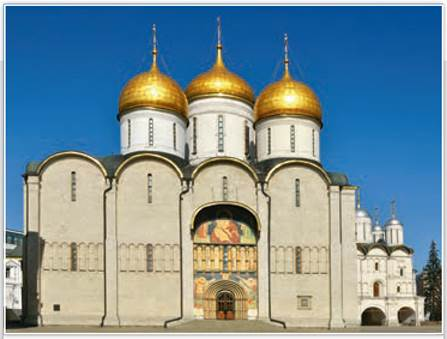
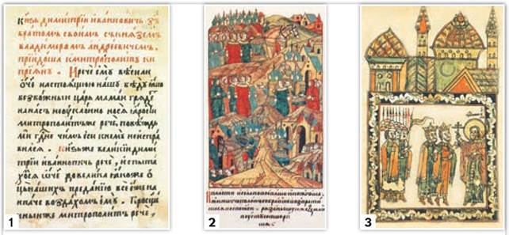
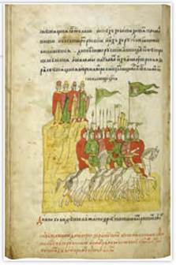
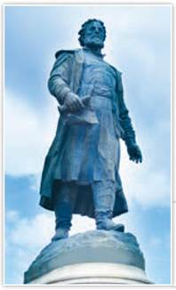
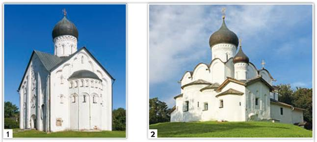
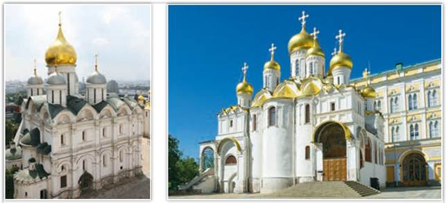
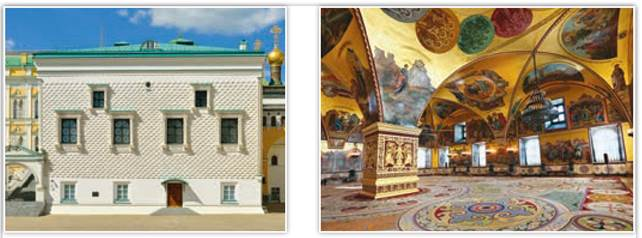
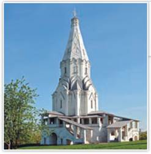
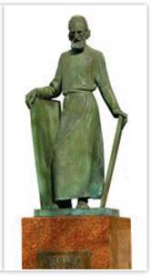
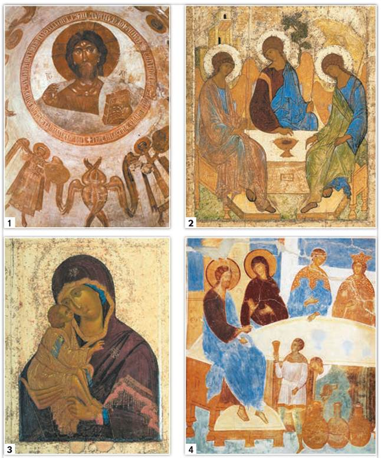

Успенский собор Московского Кремля. Архитектор А. Фиораванти. Современный вид
В Успенском соборе венчали на царство и короновали российских государей, избирали на престол митрополитов и патриархов, проводили церковные соборы.
РОССИЯ
МИР
1. Начало возрождения культуры в XIV в. Начиная с 1240-х гг. наблюдался явный упадок культуры русских земель. Батыево нашествие привело к исчезновению множества памятников письменности, иконописи, разрушению храмов и крепостей. Погибли, были угнаны в Орду или лишились возможности творить многие мастера. Каменных зданий по всей Руси, даже в Новгороде, избежавшем ордынского разгрома, не строили до конца XIII в.
В XIV в. началось постепенное возрождение русской культуры. С созданием единого Российского государства во второй половине XV в. возобновились связи с европейскими странами, что привело к новому взлёту в развитии архитектуры, технических знаний, иконописи. Оживилось развитие духовной литературы.
2. Устное народное творчество и литература. Батыево нашествие породило множество устных сказаний, отражавших народное восприятие событий. Детям рассказывали о страшном Дюдюке — враге всех христиан. Его прообразом служил царевич Дюденя (Тудан), разоривший многие русские города. Баскак Щелкан стал антигероем песни о восстании в Твери в 1327 г. Песня об Авдотье Рязаночке рассказывала, как простая горожанка Авдотья вела из ордынского плена людей «по дальней дороге», «через реки широкие, леса дремучие».

1, 2 — страницы из «Сказания о Мамаевом побоище»;
3 — миниатюра из «Повести о разорении Рязани Батыем»
Рукописные сочинения древнерусских авторов являются важным источником сведений об исторических событиях далёкого прошлого.

Страница из «Сказания о Мамаевом побоище». XVII в. Из собрания Государственного исторического музея
С середины XIII в. стали появляться летописные повести о борьбе с ордынцами. Они были сродни устным сказаниям на эту же тему. В «Повести о разорении Рязани Батыем» были такие слова: «Лучше нам смертию живота купити, чем в поганой воле быти».
Куликовская битва послужила поводом для создания «Сказания о Мамаевом побоище». В этом сочинении отражены как воспоминания участников сражения, так и размышления об эпохе Куликова поля. Эти же темы отличают поэму «Задонщина». В её основу был положен переработанный текст «Слова о полку Игореве».
Автор «Задонщины» Софроний Рязанец, по его словам, воспел «похвалу и жалость». Похвалу — доблестным воинам, решившим дать бой неприятелю, жалость — к погибшим, ибо потери русского воинства были велики. Жалостью проникнута и «Повесть о разорении Москвы Тохтамышем».
В сочинениях о Куликовской битве и походе Тохтамыша отразились изменения отношения к ордынскому владычеству на Руси. До эпохи Дмитрия Донского народ воспринимал несчастья от Орды как наказание за грехи: «Бог не татар любит, а нас за грехи карает». Эта идея пронизывала проповеди духовенства с начала нашествия ордынцев на Русь, что не способствовало собиранию народных сил для борьбы с неприятелем. Великий перелом подобных настроений связан с именем подвижника Сергия Радонежского, который благословил князя Дмитрия Ивановича на бой перед Куликовской битвой. После победы на Куликовом поле духовенство воодушевляло русских людей идеей борьбы с Ордой, что ярко проявилось в ходе Стояния на Угре. Ростовский архиепископ Вассиан Рыло направил Ивану III «Послание», в котором призывал дать отпор хану Ахмату.
В XIII—XV вв. создавались жития — сочинения о жизни князей и священнослужителей, причисленных к лику святых. В 1260-е гг. было написано знаменитое Житие святого Александра Невского.
Особой любовью пользовались на Руси Житие Сергия Радонежского и Житие Стефана Пермского, созданные иноком Троице-Сергиева монастыря Епифанием Премудрым. Свои тексты с обилием эпитетов и метафор Епифаний называл «плетением словес». Такой стиль подчёркивал святость подвижников веры. Известным автором житий был Пахомий Серб (Логофёт), который приехал на Русь из греческого Афонского монастыря. Его сочинения, написанные по строгим правилам, служили образцом для авторов житий.
Подробнее. Стефан Пермский проповедовал христианство среди зырян и пермяков — народов финно-угорской группы, создал для них алфавит и перевёл основные богослужебные книги.
О нравах, религии и культуре в далёких странах Востока рассказал тверской купец Афанасий Никитин в «Хожении за три моря» (хожение — жанр древнерусской литературы, путевые записки). Сочинение Афанасия Никитина передаёт представление о привычках русского человека XV в., его взглядах на окружающий мир.
Во времена Батыева нашествия сгорело немало древнерусских книг и летописных сводов. Но это не привело к исчезновению книжной и летописной культуры. Историки предполагают, что в конце XIII в. была создана Ипатьевская летопись, открывавшаяся текстом «Повести временных лет» 1118 г. Оригинал Ипатьевской летописи до нас не дошёл, да и сама летопись получила название по Ипатьевскому монастырю, где нашли её список, написанный уже на бумаге в конце 1420-х гг.

Памятник Афанасию Никитину. Скульпторы С. Орлов, А. Завалов. 1955 г. Тверь
Почему имя тверского купца Афанасия Никитина вошло в историю русской культуры?
В XIV—XV вв. возрождается общерусское летописание. В Суздальско-Нижегородском княжестве в 1377 г. монах Лаврентий составил летопись, названную Лаврентьевской. В начале XV в. в Москве была создана Троицкая летопись. Предполагают, что её автором стал Епифаний Премудрый, который продолжил летописный свод 1408 г. митрополита Киприана. В летописях звучала мысль о том, что московские князья являются наследниками власти великих князей киевских и владимирских.
Любопытные детали. В 1468 г. Афанасий Никитин отправился вниз по Волге. Возле Астрахани его торговый караван ограбили разбойники. Афанасий решил поправить дела при помощи посреднической торговли. За редкими товарами он отправился в Иран. Потом дорога привела его в Индию. Здесь он жил в 1471—1474 гг. Никитин был первым русским, побывавшим в Индии. На обратном пути купец описал своё путешествие. В долгих странствиях он не забывал любимую родину. В его сочинении встречаются арабские и персидские слова, мусульманские молитвы, но сам он утверждал, что всегда был верен православию.
3. Религиозные искания в правление Василия III. Духовная жизнь русского общества во многом находилась под влиянием Русской православной церкви. В 1518 г. в Москву приехал с Афона монах Максим Грек (в миру Михаил Триволис). Василий III пригласил его для перевода и исправления богослужебных книг. Вокруг учёного-монаха сложился круг единомышленников, с которыми он обсуждал церковные и политические вопросы. Максим Грек, сблизившийся с нестяжателями, в своих сочинениях осуждал падение нравов среди русского монашества. Обличал он и использование труда крестьян в монастырских владениях, считая, что русские монастыри по примеру афонских должны кормить себя сами.
4. Зодчество в XIII — начале XVI в. Возрождение каменного строительства на Руси пришлось на конец XIII в. В Новгороде бояре, купцы, ремесленники стали в складчину возводить каменные храмы. Так, в 1292 г. была построена церковь Николы на Липне, за которой последовало возведение ряда новгородских храмов. Наиболее известны из них церкви Фёдора Стратилата на Ручью (1360—1361) и Спаса Преображения на Ильине улице.
В 1280-х гг. в Твери в подражание владимирскому Успенскому собору был построен собор Спаса Преображения. Внутри храм украшали фрески.
В целом тон северо-восточной русской архитектуре XIV — первой половины XV в. задавали небольшие одноглавые московские княжеские храмы. Сын Даниила Иван I Калита при деятельном участии митрополита Петра возвёл в Москве первый Успенский собор (1326). В 1333 г. ансамбль каменных московских храмов пополнился Архангельским собором. Почти одновременно в Кремле были построены церковь Иоанна Лествичника (1329) и Спаса на Бору (1330). В конце XIV в. Василий I построил Благовещенскую церковь в Кремле, а его брат Юрий возвёл в столице своего удела Звенигороде церковь Успения на Городке.

1 — церковь Спаса Преображения на Ильине улице. Великий Новгород;
2 — церковь Василия на Горке. Псков
Подробнее. Новгородские храмы были невелики, отличались простотой и строгостью фасадов. С середины XIV в. на них появляются декоративные элементы. Храм Спаса Преображения на Ильине улице был возведён в 1374 г. Заказывали строительство храмов всё чаще не князья, а богатые бояре, купцы. В Пскове храмы, подобные новгородским, появились в начале XV в. Самый ранний из них — церковь Василия на Горке предположительно относится к 1413 г. Древний псковский храм и сегодня возвышается на небольшом холме.
Во второй половине XV в. на Руси строили много каменных зданий. В едином государстве Ивана III вырабатывался новый общерусский стиль, сочетавший традиции владимирской архитектуры и достижения европейского, особенно итальянского, зодчества. Иван III затевает грандиозную перестройку Московского Кремля. В 1485—1495 гг. вместо обветшавшей белокаменной крепости Московского Кремля с помощью итальянских мастеров строят крепость из красного кирпича.
Но началом московского строительства стало возведение нового Успенского собора. Иван III хотел, чтобы собор был похож на владимирский, но превосходил его размерами. Строительство возглавил итальянский архитектор Аристотель Фиораванти.

Архангельский и Благовещенский соборы Московского Кремля
Архангельский собор служил усыпальницей монархов, Благовещенский — являлся домовой церковью государей. В наше время на праздник Благовещения со ступеней Благовещенского собора патриарх выпускает белых голубей как символ обретения человеком свободы от рабства греха.
Строительство Успенского собора шло в 1475—1479 гг. Стены были выложены из белого камня, а барабаны и своды — из кирпича. Внутри собор получился очень просторный. Успенский собор стал своеобразным символом превращения Москвы в наследницу погибшей Византии, центр православного мира.
В 1484—1489 гг. псковские мастера воздвигли домовую церковь великих князей — Благовещенский собор. До наших дней сохранилась Грановитая палата, над строительством которой трудились в 1487—1491 гг. мастера во главе с Марко Руффо и Антонио Солари. При Иване III старый Архангельский собор разобрали и заложили в 1505 г. новое здание храма. Строительство собора завершилось в 1508 г. уже при Василии III.

Грановитая палата Московского Кремля — внешний вид и интерьер
Палату назвали Грановитой по её облицовке гранёным белым камнем, так называемым алмазным рустом, распространённым в Италии. На протяжении веков Грановитая палата являлась парадным тронным залом, в котором совершались важнейшие события политической жизни нашего государства.

Церковь Вознесения в Коломенском. Москва
Храм в Коломенском возвели по приказу Василия III в честь рождения его долгожданного наследника, названного Иваном.
За колокольней открывался вид на Ивановскую площадь, на которой дьяки выкрикивали указы (отсюда пошло выражение «кричать во всю Ивановскую»). На территории Кремля стали возводить дворцовые палаты и здания приказов. В начале XVI в. возник новый стиль русского каменного зодчества — шатровый. Долгое время среди учёных велись споры о его происхождении. Историк И. Е. Забелин (вторая половина XIX в.) считал, что шатровый стиль связан с русским деревянным зодчеством. Другие исследователи полагали, что это российское переосмысление западной готики.
В 1532 г. был построен первый в России памятник шатрового зодчества — храм Вознесения в подмосковном селе Коломенском.
5. Иконопись XIII—XV вв. В XIII-XV вв. живописное искусство на Руси развивалось в рамках отдельных территориальных школ. В Новгороде в конце XIII в. известностью пользовалась артель «богомазов» Алексея Петрова. Он первый из иконописцев стал подписывать свои работы. Самым значительным произведением Алексея Петрова стала икона Николая Чудотворца Липенского. В середине XIV в. в Москве при митрополите Феогносте возник круг византийских и русских иконописцев. Из их работ до нас дошли иконы из Успенского собора в Москве «Спас Оплечный» и «Спас Ярое Око». Однако подлинный расцвет древнерусской иконописи пришёлся на конец XIV — XV в. Известным иконописцем был византиец Феофан Грек (ок. 1340—1410).

Памятник Андрею Рублёву в Москве. Скульптор О. Комов. 1985 г.
Учёные считают, что Андрей Рублёв был монахом Троице-Сергиева, а потом Андроникова монастыря. Первое упоминание о мастере в летописи относится к 1405 г., когда он создавал фрески и иконы Благовещенского собора в Московском Кремле. Через несколько лет Рублёв восстанавливал фрески в Успенском соборе Владимира. При жизни он прославил своё имя как «иконописец преизрядный». Он стал большим авторитетом как для современников, так и для потомков. Церковный Стоглавый собор (1551) указал всем живописцам «писати... иконы, как писал Андрей Рублёв и прочие “пресловущие” (прославленные) иконописцы». В 1988 г. Андрей Рублёв был канонизирован Русской православной церковью в лике преподобного святого.
Феофан появился в Новгороде в 1378 г. Он расписал фресками церковь Спаса Преображения на Ильине улице. Фрески были так хороши, что византийского мастера пригласили в Москву. Здесь он вместе с другими художниками работал в Кремле над росписью церкви Рождества Богородицы (1395) и Благовещенского собора (1405). Немногие из работ Феофана дошли до наших дней. Предполагают, что кисти Феофана Грека может принадлежать икона Донской Божией Матери. Известно, что Феофан Грек не только писал иконы и фрески, но и украшал книги.
Наиболее известным и почитаемым иконописцем московской школы иконописи был Андрей Рублёв (ок. 1360—1428). Самая знаменитая икона Рублёва — «Троица» — была написана для Троицкого собора Троице-Сергиева монастыря. Сохранились также его иконы Звенигородского чина. К «пресловущим» иконописцам можно отнести Даниила Чёрного и Дионисия.
Дионисий украшал Успенский собор в Москве и создавал фрески Ферапонтова монастыря на Белоозере. Он работал в светлых, бирюзово-сиреневых тонах. Созданные мастером образы исполнены изящества, фигуры гибкие и стройные, с удлинёнными пропорциями, кажутся невесомыми и как будто парят в воздухе. Эмоциональность, которая была так сильна в творчестве великого иконописца Андрея Рублёва, отошла у Дионисия на второй план, но тонкий вкус художника не дал его творениям «утонуть» во внешней красивости.

1 — фреска церкви Спаса Преображения на Ильине улице. Великий Новгород;
2 — икона «Троица»;
3 — икона Донской Божией Матери;
4 — фреска Ферапонтова монастыря
С опорой на текст параграфа определите авторство фресок и икон.
6. Быт русских людей. Быт основной массы русских людей — крестьян — к XIV—XV вв. не сильно изменился в сравнении с X— XIII вв. Стоит сказать, что словом «крестьяне» на Руси называли всех христиан, в Московской Руси это слово обозначало сельских жителей.
Крестьяне были очень неприхотливы в быту. В южных землях они строили дома, низ которых углубляли в грунт. В северо-восточных областях возводили избы, в которых полы, чуть приподнятые над почвой, делали из тёсаных досок. Встречались и избы-полуземлянки, в которых зимой было теплее. На Новгородчине, где почва болотистая, дома строили с нижним нежилым этажом. Каждое сельское жилище отапливалось печью. Топились печи по-чёрному, дым выходил через маленькие оконца и дверь. В печи готовили еду, пекли хлеб. Крыши жилищ крыли соломой, часто вперемежку с землёй. Такая кровля хорошо держала тепло зимой, летом спасала от жары и не протекала.
Дома горожан отличались от жилищ сельских жителей. Редко в городе можно было увидеть землянку или полуземлянку, в основном стояли наземные срубы. Печи часто имели трубы. В окружении заборов и частоколов на городской усадьбе размещались, помимо дома, хозяйственные постройки, баня, иногда колодец.
Знатные люди жили куда богаче. Княжеские и боярские усадьбы занимали площадь от 250 до 1000 м2 и более. Хоромы состояли из нескольких построек, соединённых между собой переходами и террасами. Имелась деревянная башня, которую называли «терем». В отдельных избах жили слуги. Обширные погреба были непременным атрибутом богатой усадьбы. Большинство усадеб знати и в XV в. строили из круглого бревна. Лишь отдельные бояре имели каменные дома, но зимой в них было холодно и неуютно.
ПОДВЕДЁМ ИТОГИ
В XIII — начале XVI в. в культуре Руси можно выделить несколько периодов. Нашествие Батыя привело к резкому упадку культуры. В XIV в. происходило её возрождение. Создание единого Российского государства, избавление от ордынского владычества привели к изменению взглядов его жителей на окружающий мир, формированию национальной русской культуры, духовному и культурному взлёту России.
Вопросы и задания
Работаем с источником
Прочитайте отрывок из статьи исследователя И. Заволоко «О преподобном иконописце Андрее Рублёве» и ответьте на вопросы.
Особенностью творчества Андрея Рублёва является возвышенное, проникнутое любовью стремление к далёкому духовному началу, что было вообще отличительной особенностью древнерусской иконописи того периода... В отличие от византийского немого письма, рублёвские иконы поражают необычайной чуткостью передачи внутренних движений человеческой души. Эта особенность бросается в глаза при первом взгляде на икону Рублёва «Святая Троица»... Какая-то неземная просветлённость и особая острота чувства прекрасного привлекают внимание к этой иконе даже тех людей, которые чужды религиозности. В этой одухотворённости, в этом отрыве от всего земного выражается самобытная особенность национального русского духа, ярко выявленная в творчестве преподобного иконописца Андрея Рублёва.
Работаем с понятиями
Охарактеризуйте понятие «шатровый стиль». Приведите пример сооружения, построенного в этом стиле.
ДОПОЛНИТЕЛЬНЫЕ МАТЕРИАЛЫ
«УЧИТЕЛЮ И УЧЕНИКУ».
Материалы к параграфу на портале «История.РФ».